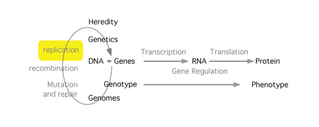

DNA Replication

Just about every cell in your body carries a copy the information manual, your genome. Yet you started as a single cell. The process of making you required copying that information manual every time a cell divided. This replication is remarkably accurate. Changing the manual by one letter happens approximately once by accident during this process. The replication machinery is similar for all living things; the enzymes which replicate DNA: a) must have a template, b) must have a primer, c) only add nucleotides to a free 3' end of DNA. Other details, like starting and stopping are more variable.
Learning resources
- Study Guide
- MBoC,(6th edition) Chapter 5
- Narration 1: The base
- Narration 2: the fork
- Narration 3: Ori
- Narration 4: Telomeres
- DNA Polymerase in action [not available on this site]
- DNA Helicase in action [not available on this site]
- The sliding clamp [not available on this site]
- Replication I [not available on this site]
- Replication II [not available on this site]
- Extending telomeres [not available on this site]
24/12/23